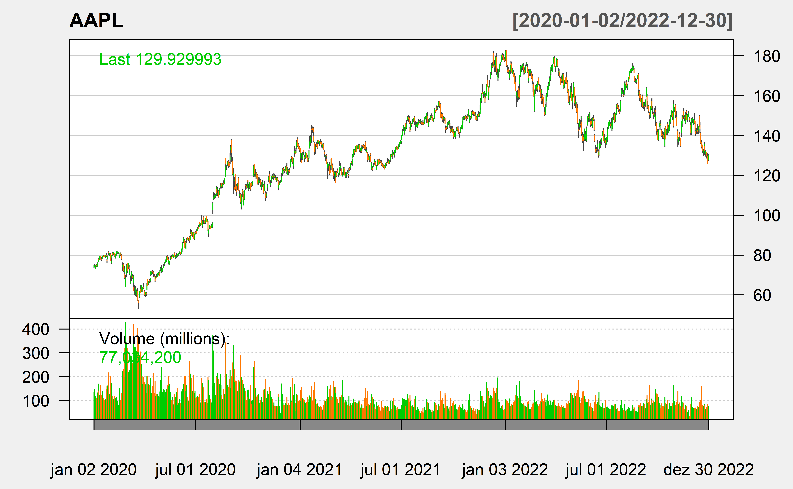
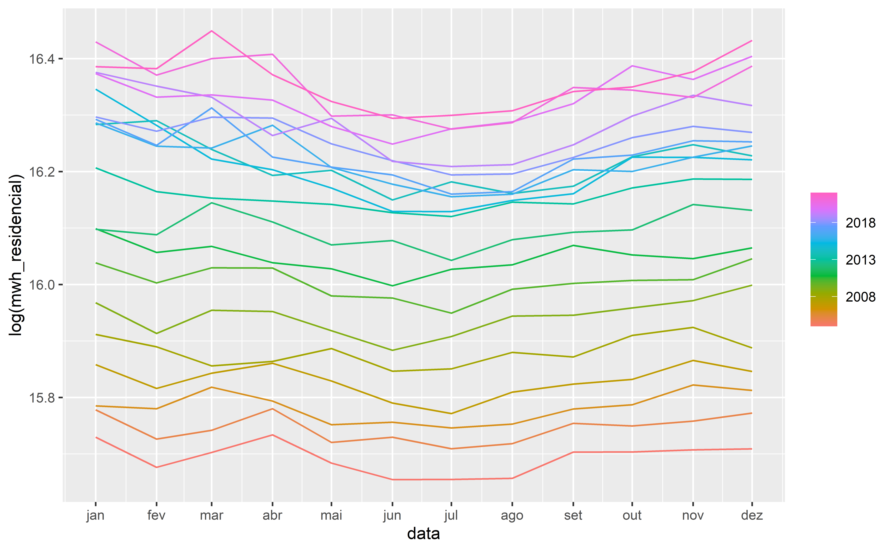

library(tidyverse)
library(kableExtra)
# parametros para o ggplot2
ggplot2::theme_set(ggplot2::theme_minimal(base_size = 16))
# parametros para imagens
knitr::opts_chunk$set(
fig.width = 8,
fig.asp = 0.618,
fig.retina = 3,
dpi = 300,
out.width = "80%"
)Probabilidade Parte 2
Carregando bibliotecas
Desigualdade de Markov
\begin{aligned} \color{black}{\mathbf{P(X>=t)}} &<= \color{black}{\frac{E(X)}{t}} \end{aligned}
Um fabricante sabe que a média do diametro de um produto é 10 mm. Ele quer estimar a proporçaõ de produtos que serão maiores ou iguais a 20 mm.
\begin{aligned} \color{black}{\mathbf{P(X>=20)}} &<= \color{black}{\frac{10}{20}} = \color{black}{\frac{1}{2}} \end{aligned}
Vamos supor que os diametros sejam normalmente distribuídos. Como seria a probabilidade acima, considerando vários valores de desvio padrão?
sd <- seq(1, 100, 5)
plot(sd, 1 - pnorm(20, 10, sd), ylim = c(0, 1),
xlab = "Desvio Padrão", ylab = "P(X >= 20)")
abline (h = 10/20)
text(50, 0.55, "Limite de Markov")
Normal Bivariada
library(mvtnorm)
# Matriz de covariâncias
sigma <- matrix(c(1, 0.5, 0.5, 1), 2, 2)
## Valores de x e y
x <- seq(-4, 4, length=25)
y <- seq(-4, 4, length=25)
# Função para avaliar a densidade da normal bivariada
bv.norm <- function(x, y, sigma) {
z <- cbind(x,y)
return(dmvnorm(z, sigma=sigma))
}
# Usando outer para avaliar a fdp num grid de valores x e y
fxy <- outer(x, y, bv.norm, sigma)
# Criando o gráfico 3D
persp(x, y, fxy, theta=60, phi=20, expand=0.4, ticktype="detailed",
zlab="",col="grey", cex.lab=1)t Bivariada
#library(mvtnorm)
# Matriz de covariâncias
sigma <- matrix(c(1, 0.5, 0.5, 1), 2, 2)
## Valores de x e y
x <- seq(-4, 4, length=25)
y <- seq(-4, 4, length=25)
# Função para avaliar a densidade da normal bivariada
bv.t <- function(x, y, sigma) {
z <- cbind(x,y)
return(dmvt(z, sigma=sigma))
}
# Usando outer para avaliar a fdp num grid de valores x e y
fxy <- outer(x, y, bv.t, sigma)
# Criando o gráfico 3D
persp(x, y, fxy, theta=40, phi=30, expand=0.5, ticktype="detailed",
zlab="",col="grey", cex.lab=1)